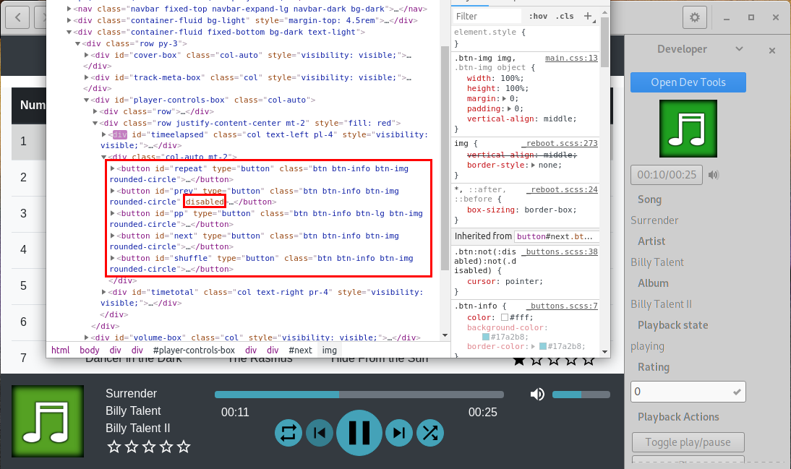
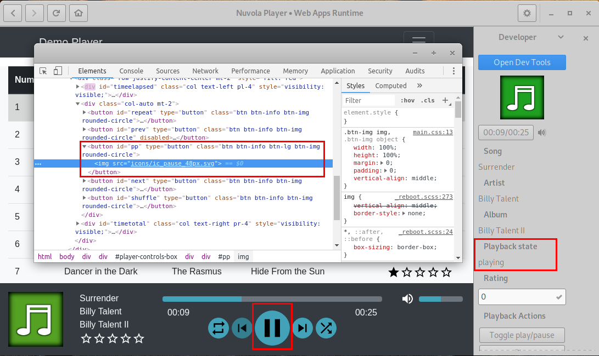
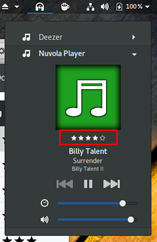
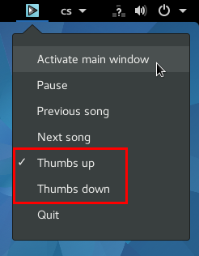
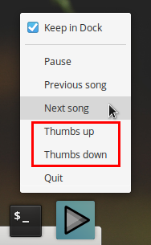
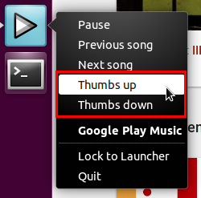
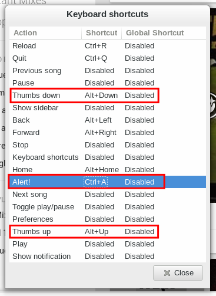
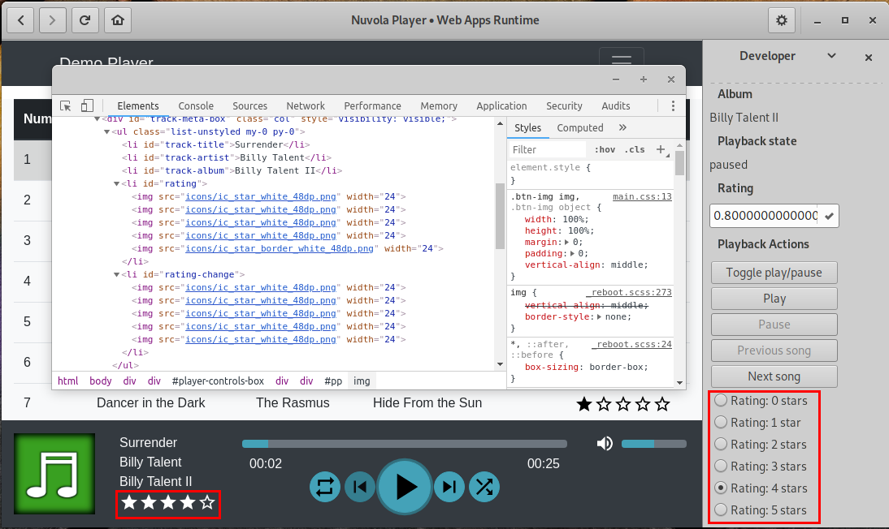

Media Player Integration
Historically, Nuvola Apps Runtime (previously known as Nuvola Player) has a great support for media players and offers a high level API for Media Player Integration.
Prerequisites
Before continuing, make sure you are familiar with following topics:
- Service Integration Tutorial: Generic information how to set up Nuvola ADK, create a basic skeleton of your script and open web inspector tools.
- Document Object Model: Methods how to extract metadata from a web page, e.g. document.getElementById, document.getElementsByName, document.getElementsByClassName, document.getElementsByTagName, document.querySelector, document.querySelectorAll.
Metadata
Media player scripts generally contain these metadata:
"categories": "AudioVideo;Audio;"- for the launcher to be shown among audio & video applications"requirements": "Feature[Flash]"- if your web app requires Flash plugin for media playback"requirements": "Codec[MP3]"- if your web app requires HTML5 Audio with MP3 codec for media playback"requirements": "Feature[MSE] Codec[MP3]"- if your web app requires HTML5 Media Source Extension (MSE) with MP3 codec for media playback
Integration Script
Media player skeleton
Save the code bellow as a integrate.js file. It performs following actions:
- Creates new
Nuvola.MediaPlayercomponent. - Creates new
WebAppobject. - Initializes WebWorker process to call
_onPageReadycallback when page is loaded. - Creates
update()loop. - Connect handler for actions.
'use strict'
(function (Nuvola) {
// Create media player component
var player = Nuvola.$object(Nuvola.MediaPlayer)
// Handy aliases
var PlaybackState = Nuvola.PlaybackState
var PlayerAction = Nuvola.PlayerAction
// Create new WebApp prototype
var WebApp = Nuvola.$WebApp()
// Initialization routines
WebApp._onInitWebWorker = function (emitter) {
Nuvola.WebApp._onInitWebWorker.call(this, emitter)
var state = document.readyState
if (state === 'interactive' || state === 'complete') {
this._onPageReady()
} else {
document.addEventListener('DOMContentLoaded', this._onPageReady.bind(this))
}
}
// Page is ready for magic
WebApp._onPageReady = function () {
// Connect handler for signal ActionActivated
Nuvola.actions.connect('ActionActivated', this)
// Start update routine
this.update()
}
// Extract data from the web page
WebApp.update = function () {
// ...
// Schedule the next update
setTimeout(this.update.bind(this), 500)
}
// Handler of playback actions
WebApp._onActionActivated = function (emitter, name, param) {
}
WebApp.start()
})(this) // function (Nuvola)Interesting elements
It might be useful to create a mapping of interesting web page elements to reference them later easily.
This code snippet first creates mapping of the elements, then removes those with the disabled attribute,
and finally splits the combined play/pause button.
WebApp.update = function () {
var elms = this._getElements()
...
}
...
WebApp._getElements = function () {
// Interesting elements
var elms = {
play: document.getElementById('pp'),
pause: null,
next: document.getElementById('next'),
prev: document.getElementById('prev'),
repeat: document.getElementById('repeat'),
shuffle: document.getElementById('shuffle'),
progressbar: document.getElementById('progressbar'),
volumebar: document.getElementById('volume-bar')
}
// Ignore disabled buttons
for (var key in elms) {
if (elms[key] && elms[key].disabled) {
elms[key] = null
}
}
// Distinguish between play and pause action
if (elms.play && elms.play.firstChild && elms.play.firstChild.src.includes('pause')) {
elms.pause = elms.play
elms.play = null
}
return elms
}
Playback state
Looking at the web page, can use the state of the combined play/pause button to figure out playback state. Playback states are defined in an enumeration Nuvola.PlaybackState and set by method player.setPlaybackState().
...
var PlaybackState = Nuvola.PlaybackState
...
WebApp.update = function () {
...
var state
if (elms.pause) {
state = PlaybackState.PLAYING
} else if (elms.play) {
state = PlaybackState.PAUSED
} else {
state = PlaybackState.UNKNOWN
}
player.setPlaybackState(state)
...
}
Track details
In the demo player, track details are mostly available as a plain text content of the respective elements. We can use
Nuvola.queryText() utility function to do that. The album art is a bit more complicated
as it is available as the src attribute and the address is not absolute. We can use
Nuvola.queryAttribute() to obtain the content of the src attribute and a custom
callback to convert the relative URL to the absolute one. Finally, we pass
track details to method player.setTrack().
WebApp.update = function () {
...
var track = {
title: Nuvola.queryText('#track-title'),
artist: Nuvola.queryText('#track-artist'),
album: Nuvola.queryText('#track-album'),
artLocation: Nuvola.queryAttribute('#track-cover', 'src', (src) => (
src ? window.location.href.substring(0, window.location.href.lastIndexOf('/') + 1) + src : null
)),
}
player.setTrack(track)
...
}
Media Player Actions
The second responsibility of a service integration is to manage media player actions:
- Set which actions are enabled.
- Invoke the actions when they are activated.
The first part is done via calls player.setCanPause(),
player.setCanPlay(),
player.setCanGoPrev() and
player.setCanGoNext().
We can take advantage of the WebApp._getElements() utility functions defined earlier. It contains only buttons that
are available and not disabled.
WebApp.update = function () {
...
var elms = this._getElements()
...
player.setCanGoPrev(!!elms.prev)
player.setCanGoNext(!!elms.next)
player.setCanPlay(!!elms.play)
player.setCanPause(!!elms.pause)
...
}
To handle playback actions defined in an enumeration PlayerAction, it is necessary to connect to Actions::ActionActivated signal. You can use a convenient function Nuvola.clickOnElement() to simulate clicking.
var PlayerAction = Nuvola.PlayerAction
...
WebApp._onPageReady = function () {
// Connect handler for signal ActionActivated
Nuvola.actions.connect('ActionActivated', this)
// Start update routine
this.update()
}
...
WebApp._onActionActivated = function (emitter, name, param) {
var elms = this._getElements()
switch (name) {
case PlayerAction.TOGGLE_PLAY:
if (elms.play) {
Nuvola.clickOnElement(elms.play)
} else {
Nuvola.clickOnElement(elms.pause)
}
break
case PlayerAction.PLAY:
Nuvola.clickOnElement(elms.play)
break
case PlayerAction.PAUSE:
case PlayerAction.STOP:
Nuvola.clickOnElement(elms.pause)
break
case PlayerAction.PREV_SONG:
Nuvola.clickOnElement(elms.prev)
break
case PlayerAction.NEXT_SONG:
Nuvola.clickOnElement(elms.next)
break
}
}Always test playback actions
You should click action buttons in the developer's sidebar to be sure they are working as expected.
Progress bar
Since Nuvola 4.5, it is also possible to integrate progress bar. In order to extract track length and position, use these API calls:
- MediaPlayer.setTrack supports
track.lengthproperty, which holds track length either as a string 'mm:ss' or number of microseconds. - MediaPlayer.setTrackPosition is used to update track position.
- Nuvola.parseTimeUsec can be used to convert track length string (e.g. '2:35')
into the number of microseconds. MediaPlayer.setTrack does that automatically
for the
track.lengthproperty.
The necessary information is available as a plain text in the Demo player, so we can use Nuvola.queryText() utility function for that.
WebApp.update = function () {
...
var track = {}
...
track.length = Nuvola.queryText('#timetotal')
player.setTrack(track)
...
player.setTrackPosition(Nuvola.queryText('#timeelapsed'))
...
}If you wish to let user change track position, use this API:
- MediaPlayer.setCanSeek is used to enable/disable remote seek.
- Then the PlayerAction.SEEK is emitted whenever a remote seek is requested. The action parameter contains a track position in microseconds.
- You may need to use Nuvola.clickOnElement with coordinates to trigger a click
event at the position of progress bar corresponding to the track position,
e.g.
Nuvola.clickOnElement(progressBar, param/Nuvola.parseTimeUsec(trackLength), 0.5).
WebApp.update = function () {
...
player.setCanSeek(state !== PlaybackState.UNKNOWN && elms.progressbar)
...
}
...
WebApp._onActionActivated = function (emitter, name, param) {
var elms = this._getElements()
switch (name) {
...
case PlayerAction.SEEK:
var total = Nuvola.parseTimeUsec(Nuvola.queryText('#timetotal'))
if (param > 0 && param <= total) {
Nuvola.clickOnElement(elms.progressbar, param / total, 0.5)
}
break
...
}
}
...
Volume management
Since Nuvola 4.5, it is also possible to integrate volume management. In order to extract volume, use MediaPlayer.updateVolume with the parameter in range 0.0-1.0 (i.e. 0-100%).
The volume is stored as an aria-valuenow attribute in the demo app, so we can use
Nuvola.queryAttribute() for that.
WebApp.update = function () {
...
player.updateVolume(Nuvola.queryAttribute('#volume-mark', 'aria-valuenow', (volume) => volume / 100))
...
}If you wish to let user change volume, use this API:
- MediaPlayer.setCanChangeVolume is used to enable/disable remote volume management.
- Then the PlayerAction.CHANGE_VOLUME is emitted whenever a remote volume change requested. The action parameter contains new volume as a double value in range 0.0-1.0.
- You may need to use Nuvola.clickOnElement with coordinates to trigger a click
event at the position of volume bar corresponding to the desired volume,
e.g.
Nuvola.clickOnElement(volumeBar, param, 0.5).
WebApp.update = function () {
...
player.setCanChangeVolume(!!elms.volumebar)
...
}
...
WebApp._onActionActivated = function (emitter, name, param) {
var elms = this._getElements()
switch (name) {
...
case PlayerAction.CHANGE_VOLUME:
Nuvola.clickOnElement(elms.volumebar, param, 0.5)
break
...
}
}
...
Track Rating
Since Nuvola 3.1, it is also possible to integrate track rating. One of consumers of this metadata is GNOME Shell Media Player extension, for example:

In order to provide users with the current rating state, use these API calls:
- MediaPlayer.setTrack() method accepts
track.ratingproperty, which holds track rating as a number in range from0.0to1.0as in the MPRIS/xesam specification. - MediaPlayer.setCanRate() controls whether it is allowed to change rating remotely or not.
- MediaPlayer::RatingSet is emitted when rating is changed remotely.
It's up to you to decide how to map the double value to the rating system of your web app. Here are some suggestions:
- Percentage rating is the simplest case mapping the range
0.0-1.0to percentage 0%-100%. - Five-star rating may calculate the number of stars as
stars = rating / 5.0. - Thumb up/down rating is a bit tricky. You can use rating
0.2for thumb down and1.0for thumb up in thetrack.ratingproperty and interpret rating <=0.41(0-2 stars) as thumb down and rating >=0.79(4-5 stars) as thumb up in theRatingSetsignal handler.
The demo app supports five-star rating:
...
// Page is ready for magic
WebApp._onPageReady = function () {
// Connect handler for signal ActionActivated
Nuvola.actions.connect('ActionActivated', this)
player.connect('RatingSet', this)
// Start update routine
this.update()
}
// Extract data from the web page
WebApp.update = function () {
var track = {
...
}
...
// Parse rating
var rating = document.getElementById('rating')
var stars = 0
if (rating) {
for (; stars < rating.childNodes.length; stars++) {
if (rating.childNodes[stars].src.includes('star_border_white')) {
break
}
}
track.rating = stars / 5.0
}
player.setTrack(track)
...
var state = PlaybackState.UNKNOWN
state = ...
player.setCanRate(state !== PlaybackState.UNKNOWN)
}
...
// Handler for rating
WebApp._onRatingSet = function (emitter, rating) {
var stars
if (rating < 0.1) {
stars = 0
} else if (rating < 0.3) {
stars = 1
} else if (rating < 0.5) {
stars = 2
} else if (rating < 0.7) {
stars = 3
} else if (rating < 0.9) {
stars = 4
} else if (rating < 1.1) {
stars = 5
} else {
stars = 0
}
this._setRating(stars)
}
WebApp._setRating = function (stars) {
var elm = document.getElementById('rating-change')
if (elm) {
if (stars === 0) {
// Click on the current star to erase it
var rating = document.getElementById('rating')
if (rating) {
for (stars = 0; stars < rating.childNodes.length; stars++) {
if (rating.childNodes[stars].src.includes('star_border_white')) {
break
}
}
}
}
if (stars > 0 && stars < 6) {
Nuvola.clickOnElement(elm.childNodes[stars - 1])
}
}
}
...Custom Actions
Service integrations can also create custom Actions like thumbs up/down, star rating or whatever might be useful. These actions are typically exported as menu items of a tray icon or a dock item, or can have a keyboard shortcut:
   
Let's enhance our current integration of track rating with custom actions for that:
...
var player = Nuvola.$object(Nuvola.MediaPlayer)
var _ = Nuvola.Translate.gettext
...
// Define rating options - 5 states with state id 0-5 representing 0-5 stars
var ratingOptions = [
// stateId, label, mnemo_label, icon, keybinding
[0, _('Rating: 0 stars'), null, null, null, null],
[1, _('Rating: 1 star'), null, null, null, null],
[2, _('Rating: 2 stars'), null, null, null, null],
[3, _('Rating: 3 stars'), null, null, null, null],
[4, _('Rating: 4 stars'), null, null, null, null],
[5, _('Rating: 5 stars'), null, null, null, null]
]
// Add new radio action named `rating` with initial state `3` (3 stars)
var ACTION_RATING = 'rating'
Nuvola.actions.addRadioAction('playback', 'win', ACTION_RATING, 3, ratingOptions)
WebApp._onPageReady = function () {
// Add extra actions
var actions = []
for (var i = 0; i <= 5; i++) {
actions.push(ACTION_RATING + '::' + i)
}
player.addExtraActions(actions)
...
}
WebApp.update = function () {
...
stars = ...
state = ...
...
Nuvola.actions.updateEnabledFlag(ACTION_RATING, state !== PlaybackState.UNKNOWN)
Nuvola.actions.updateState(ACTION_RATING, stars)
...
}
WebApp._onActionActivated = function (emitter, name, param) {
switch (name) {
...
case ACTION_RATING:
this._setRating(param)
break
...
}
}